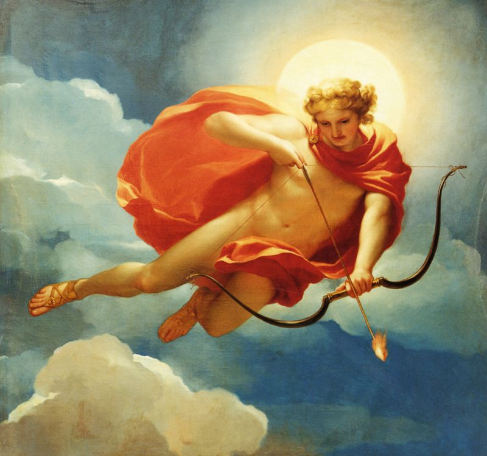
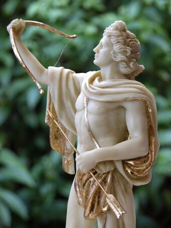
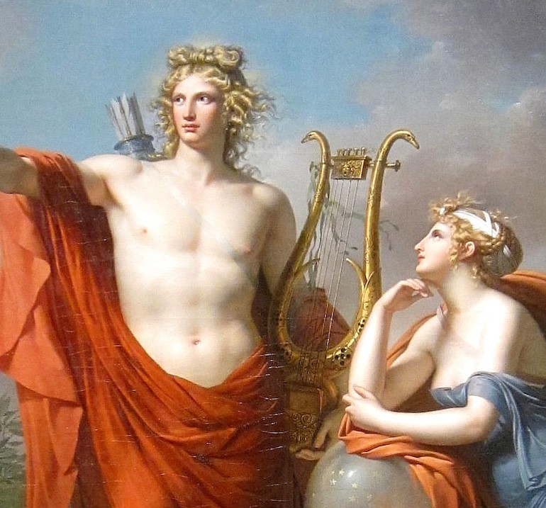
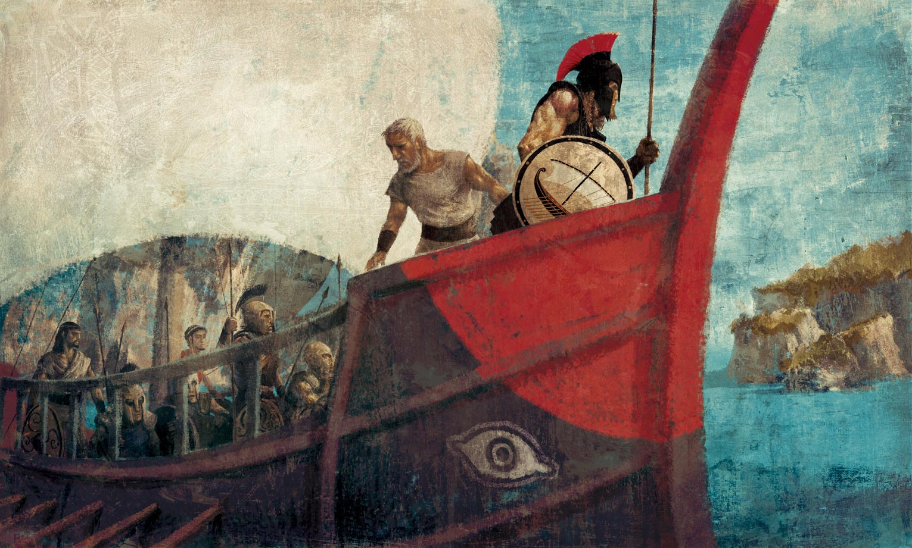
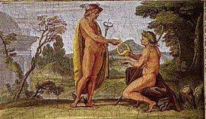

Apolo
Introducción
Apolo, también llamado Apolo por la mitología Romana (en este caso es el mismo), era el joven y apuesto dios de muchas cosas, siendo reconocido como dios de la profecía y la adivinación; el tiro con arco; la curación y la enfermedad; la música, la poesía, las artes en general; y de los rebaños, también como un representante de la y el sol. Hermano gemelo de Artemisa, hijos de Zeus y Leto. Con sus flechas era capaz de causar enfermedades infecciosas, aunque también era capaz de curar, por lo que se le conocía como "el que ataca de lejos".
  
Nacimiento
Cuando Hera descubrió que Leto estaba embarazada de Zeus, prohibió que diera a luz en tierra firme, ya sea en continente o cualquier isla del mar. Retuvo a Ilitía para que no fuera a socorrerla.
Además, envió a la temible serpiente Pitón para que asesinara a Leto en el trance del parto. Pero Zeus envió al viento Bóreas para que recogiera a Leto y la llevara junto a Poseidón. Este la llevó a su vez a la recién creada isla flotante
de Ortigia, que no era continente ni una isla real, y cubrió el lugar con una bóveda formada por sus olas.


Allí, sin contravenir la prohibición de Hera, los demás dioses presentes en el nacimiento en Delos enviaron a Iris para que trajese
a Ilitía. En cuanto la diosa puso un pie en la isla, Leto, aferrada a un olivo, alumbró a Artemisa, quien inmediatamente ayudó a Apolo a venir al mundo. Más tarde, la isla de Ortigia fue llamada Delos y Zeus la aseguró al fondo del Océano.
Recién nacidos, Apolo y Artemisa que tenían grandes habilidades de cazadores, mataron a la Pitón que se disponía a atacarlos.
Algunos mitos
Los Argonautas
Antes de zarpar, los Argonautas habían aclamado a Heracles para que se convirtiera en su jefe pero este rehusó y propuso que la dirección fuera otorgada a Jasón, obviamente. Tras realizar sacrificios a Apolo, la nave, pilotada por Tifis, zarpó desde el puerto de Págasas. Ya de vuelta de su travesía, les sorprendió una gran tempestad pero fueron ayudados por Apolo, que disparó flechas que hicieron emerger la isla de Ánafe, donde los Argonautas erigieron un altar al dios y le rindieron sacrificios. Finalmente, tras abastecerse de agua en Egina y navegar por la zona costera del Ática, Áulide, Eubea y Opunte, llegaron de nuevo al puerto de Págasas.

La Lira de apolo
En una ocasión, Apolo desatendió su hermoso rebaño. Hermes, que admiraba su ganado, vio cómo este lo abandonaba y decidió robárselo y ocultarlo en una cueva. Pero Apolo, que tenía el don de la profecía, sabia exactamente dónde estaba, así que fue en busca de Hermes y le pidió que le devolviera el rebaño. Pero, cuando llegó donde Hermes, este empezó a tocar un instrumento que había creado con los intestinos de una de sus reces. Al oír la música de la lira, Apolo quedó cautivado y accedió a cambiarle su rebaño por ella.
